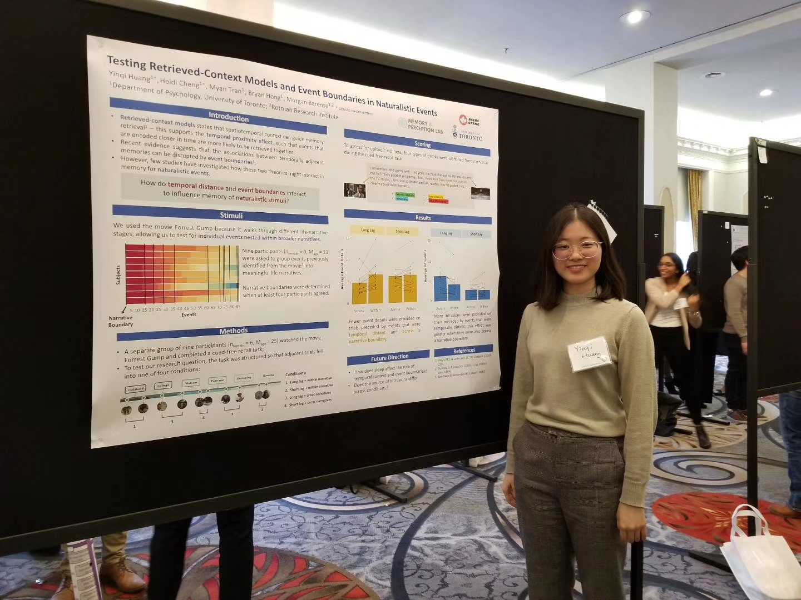
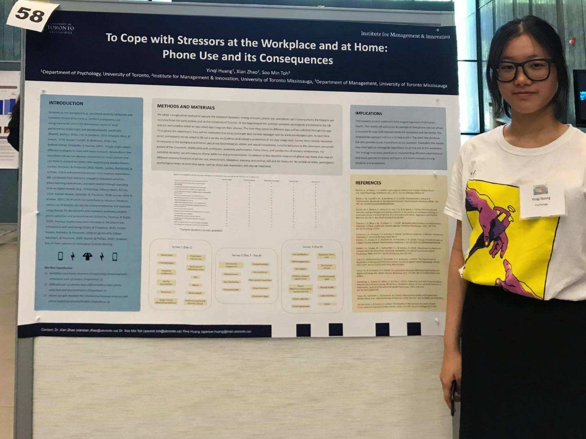

Yinqi Huang
learning & memory ∙ time series models ∙ science communication

| Projects | |||
|---|---|---|---|
| Knowledge Tracing Models (Bayesian, Recurrent Neural Network) | Devhaus Technologies | May 2020 - Present | |
| Temporal Context & Event Boundaries Affect Recall Richness | Supervisors: Dr. Morgan Barense, Bryan Hong | Sep 2019 - Dec 2020 | |
| To Cope with Stressors at the Workplace and at Home: Phone Use and its Consequences | Supervisors: Dr. Soo Min Toh, Dr. Xian Zhao | May - Aug 2019 | |
| Replicability of Implicit & Explicit Attitudes Test | Supervisor: Dr. Elizabeth Page-Gould | Mar 2017 - Apr 2019 |
| Publications | ||
|---|---|---|
| Replicability of Two Classic Experiments in Social Psychology: Implicit Association Test and Imagined Contact. | Huang, Y. (2020). | Inkblot: Undergraduate Journal of Psychology, 9, 38-46. |
| Posters | ||
|---|---|---|
| How do temporal context and event boundaries affect recall richness for Forrest Gump? | Hong, B., Tran, M.A., Cheng, H., Huang, Y., & Barense, M.D. (2020). | Context and Episodic Memory Symposium, Philadelphia, PA |
| Testing retrieved-context models and event boundaries in naturalistic events. | Huang, Y., Cheng, H., Tran, M., Hong, B., & Barense, M.D. (2020). | Lake Ontario Visionary Establishment, Ontario, Canada |
| To cope with stressors at the workplace and at home: phone use and its consequences. | Huang, Y., Zhao, X., & Toh, S. M. (2019). | Smarti Gras, Ontario, Canada |

